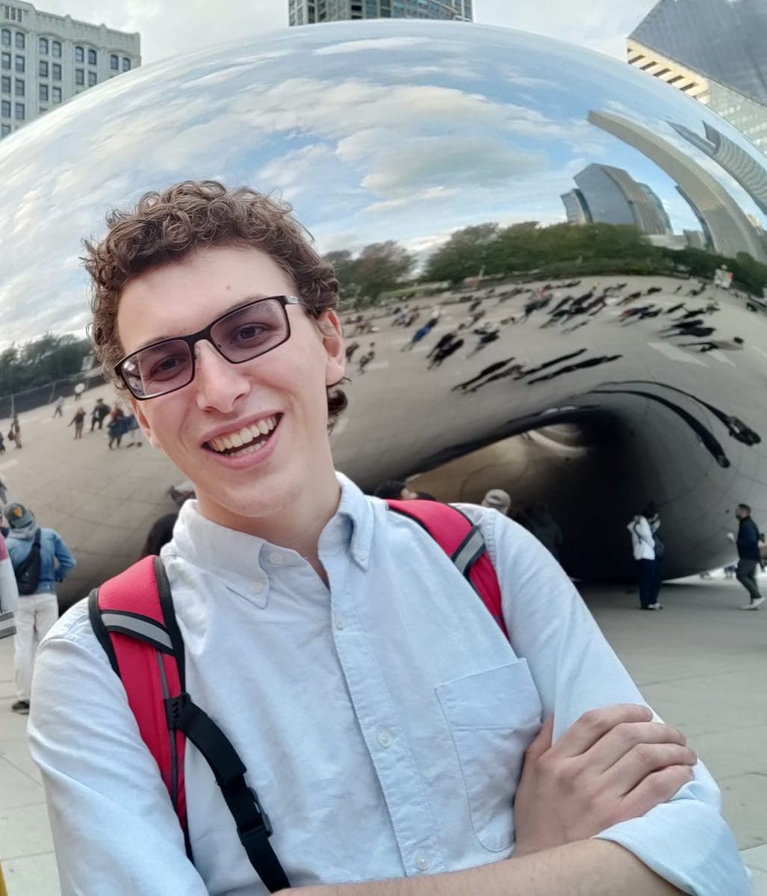

About
I am a PhD student in CS at Purdue University, studying programming languages, formal methods, automated reasoning, program synthesis, and refinement types advised by Professor Ben Delaware.
I presented some upcoming work on synthesizing coverage-complete test input generators at MWPLS 2024. The slides are available from Google Slides. A preprint is available on Arxiv: We've Got You Covered: Type-Guided Repair of Incomplete Generators.
In the summer of 2024 I interned at Amazon Web Services(AWS) as an Applied Scientist. I combined my interests in Abstract Interpretation, Refinement Types, and some classical ML(DBSCAN / K Nearest Neighbors) to build a generalizable Anomaly Detection framework for AWS services.
During my undergrad at Cornell University, I worked in the APL research group on bringing the proposed Gallifrey Programming Language for distributed programming to life. I finished as a member of the Capra research group where I worked on designing a shallowly-embedded DSL for the CPU-GPU interface in Rust.
I have interned at IBM Research working on NLP models for corpus conversion.
Occasionally I spend my free time(procrastinate) by adding features and tooling to the Bril(Big Red Intermediate Language) compiler IR. I help maintain a rust crate called LALRPOP for parser generation. I often like to contribute back to Rust crates that I use.
Service
From 2022 to 2024 I co-lead the PurPL seminar.
I continue to hold the role of webmaster for the PurPL website.
I was a student volunteer at PLDI 2022 and PLDI 2023.
Teaching
I have TA'd for the following courses
Purdue University:
- CS 456 (Undergraduate Programming Languages) - Fall 2022
- CS 38003 (Python Programming) - Spring 2023
Cornell University:
- CS 2043 (Unix and Scripting) - Spring 2019